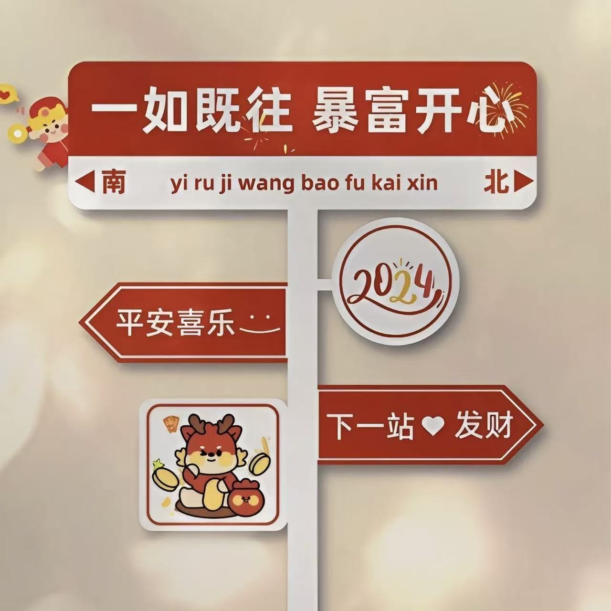

Abyss自用越狱源
Abyss Repo · 自用越狱源 · RootHide · arm64e
AbyssRootHidearm64e
自用越狱源，内容以仓库实际文件为准。
⬇️ 添加源
https://aby7557.github.io打开软件包管理器的软件源页面，粘贴地址并刷新即可浏览本源。
⚠️ 免责声明
本源为个人学习和自用分享用途，包的版权及责任归原作者所有。越狱及安装第三方软件存在风险，请在安装前自行备份并评估；遇到冲突请及时卸载相关包。

自用越狱源，内容以仓库实际文件为准。
https://aby7557.github.io打开软件包管理器的软件源页面，粘贴地址并刷新即可浏览本源。
本源为个人学习和自用分享用途，包的版权及责任归原作者所有。越狱及安装第三方软件存在风险，请在安装前自行备份并评估；遇到冲突请及时卸载相关包。